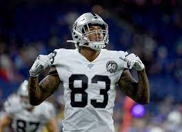
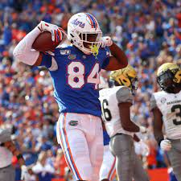

1. Travis Kelce
Link : H/L video of Travis Kelce
| Year | Team | Games | Receiving | Rushing | Fumbles | ||||||||||
|---|---|---|---|---|---|---|---|---|---|---|---|---|---|---|---|
| GP | GS | Rec | Yds | Avg | Lng | TD | Att | Yds | Avg | Lng | TD | Fum | Lost | ||
| 2017 | KC | 15 | 15 | 83 | 1,083 | 12.5 | 44 | 8 | 2 | 7 | 3.5 | 4 | 0 | 0 | 0 |
| 2018 | KC | 16 | 16 | 103 | 1,336 | 13.0 | 43 | 10 | — | — | — | — | — | 2 | 1 |
| 2019 | KC | 16 | 16 | 97 | 1,229 | 12.7 | 47 | 5 | 1 | 4 | 4.0 | 4T | 1 | 1 | 1 |
| 2020 | KC | 15 | 15 | 105 | 1,416 | 13.5 | 45 | 11 | — | — | — | — | — | 1 | 1 |
| Career | 111 | 104 | 612 | 7,881 | 12.9 | 80T | 48 | 4 | 6 | 1.5 | 4 | 1 | 10 | 8 | |

Link : H/L video of Darren Waller
2. Darren Waller
Link : H/L video of Darren Waller
| Year | Team | Games | Receiving | Rushing | Fumbles | ||||||||||
|---|---|---|---|---|---|---|---|---|---|---|---|---|---|---|---|
| GP | GS | Rec | Yds | Avg | Lng | TD | Att | Yds | Avg | Lng | TD | Fum | Lost | ||
| 2018 | OAK | 4 | 0 | 6 | 75 | 12.5 | 44 | 0 | 1 | 21 | 21.0 | 21 | 0 | 0 | 0 |
| 2019 | OAK | 16 | 16 | 90 | 1,145 | 12.7 | 75 | 3 | 2 | 5 | 2.5 | 7 | 0 | 1 | 1 |
| 2020 | LV | 16 | 15 | 107 | 1,196 | 11.2 | 38 | 9 | 0 | 0 | 0.0 | 0 | 0 | 2 | 2 |
| Career | 54 | 35 | 215 | 2,519 | 11.7 | 75 | 14 | 3 | 26 | 8.7 | 21 | 0 | 3 | 3 | |
3. George Kittle
Link : H/L video of George Kittle
| Year | Team | Games | Receiving | Rushing | Fumbles | ||||||||||
|---|---|---|---|---|---|---|---|---|---|---|---|---|---|---|---|
| GP | GS | Rec | Yds | Avg | Lng | TD | Att | Yds | Avg | Lng | TD | Fum | Lost | ||
| 2017 | SF | 15 | 7 | 43 | 515 | 12.0 | 44 | 2 | 0 | 0 | 0.0 | 0 | 0 | 0 | 0 |
| 2018 | SF | 16 | 16 | 88 | 1,377 | 15.6 | 85T | 5 | 1 | 10 | 10.0 | 10 | 0 | 0 | 0 |
| 2019 | SF | 14 | 14 | 85 | 1,053 | 12.4 | 61T | 5 | 5 | 22 | 4.4 | 18 | 0 | 1 | 0 |
| 2020 | SF | 8 | 8 | 48 | 634 | 13.2 | 44T | 2 | 2 | 17 | 8.5 | 9 | 0 | 0 | 0 |
| Career | 53 | 45 | 264 | 3,579 | 13.6 | 85T | 14 | 8 | 49 | 6.1 | 18 | 0 | 1 | 0 | |
4. Mark Andrews
Link : H/L video of Mark Andrews
| Season | Team | Games | Receiving | |||||||
|---|---|---|---|---|---|---|---|---|---|---|
| GP | GS | Tgt | Rec | Ctch% | Yds | Avg | Lng | TD | ||
| 2018 | BAL | 16 | 3 | 50 | 34 | 68.0% | 552 | 16.3 | 74 | 3 |
| 2019 | BAL | 15 | 4 | 98 | 64 | 65.3% | 852 | 13.3 | 51 | 10 |
| 2020 | BAL | 14 | 2 | 88 | 58 | 65.9% | 701 | 12.1 | 39 | 7 |
| Total | 45 | 9 | 236 | 156 | 66.1% | 2,105 | 13.5 | 74 | 20 | |

Link : H/L video of Kyle Pitts
5. Kyle pitts
Link : H/L video of Kyle Pitts
| Year | Receiving | ||||
|---|---|---|---|---|---|
| GP | Rec | Yds | Avg | TD | |
| 2018 | 3 | 3 | 73 | 24.3 | 1 |
| 2019 | 13 | 54 | 649 | 12.0 | 5 |
| 2020 | 8 | 43 | 770 | 17.9 | 12 |
| Career[11] | 24 | 100 | 1,492 | 14.9 | 18 |